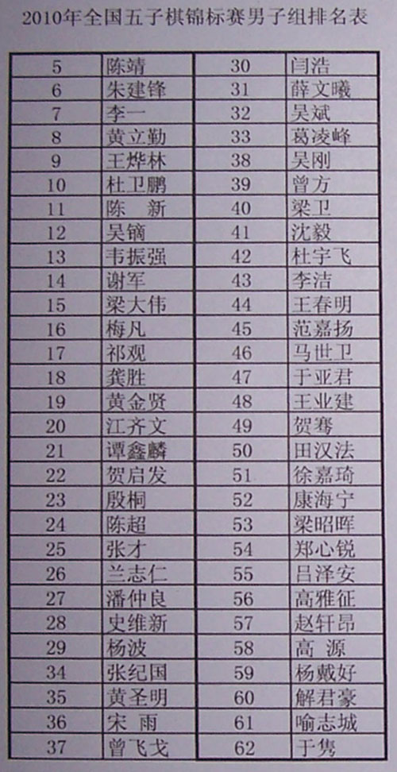

2010全国五子棋锦标赛男子组最终排名
#1 2010全国五子棋锦标赛男子组最终排名作者：有志青年 发表时间：2010-10-6 16:48:47
［ 失落刀 于 2010-10-6 16:52:50 时奖励此帖[金币加 100 威望加1］
［ 雨一直下 于 2010-10-6 17:11:14 时花20金币送鲜花一朵］
［ 极地剑客 于 2010-10-8 13:05:30 时花20金币送鲜花一朵］
#2 Re:2010全国五子棋锦标赛男子组最终排名作者：如火流年 发表时间：2010-10-6 16:51:30
咩。。。狮子好厉害［ 极地剑客 于 2010-10-8 13:05:50 时花20金币送鲜花一朵］
#3 Re:2010全国五子棋锦标赛男子组最终排名作者：小帮帮 发表时间：2010-10-6 20:27:44
呵呵，这届比赛下得很激烈，赛制也可以说很好，选手基本都赛出了水平。回头好好膜拜各个对局。［ 极地剑客 于 2010-10-8 13:05:40 时花20金币送鲜花一朵］
#4 Re:2010全国五子棋锦标赛男子组最终排名作者：南京杨帆 发表时间：2010-10-6 20:38:56
祝愿小狮子明年更上一层楼！
［ 极地剑客 于 2010-10-8 13:05:58 时花20金币送鲜花一朵］
#5 Re:2010全国五子棋锦标赛男子组最终排名作者：白衣神童小剑魔 发表时间：2010-10-6 20:39:28
张才好样的！［ 极地剑客 于 2010-10-8 13:06:04 时花20金币送鲜花一朵］
#6 Re:2010全国五子棋锦标赛男子组最终排名作者：冷酒一杯 发表时间：2010-10-6 21:23:34
竟然给有志加威望。#7 Re:2010全国五子棋锦标赛男子组最终排名作者：淡红的秋樱 发表时间：2010-10-6 23:22:17
极地好棒哦
［ 极地剑客 于 2010-10-8 13:06:13 时花20金币送鲜花一朵］
#8 Re:2010全国五子棋锦标赛男子组最终排名作者：屏蔽 发表时间：2010-10-6 23:26:37
拜极地大师……［ 极地剑客 于 2010-10-8 13:06:21 时花20金币送鲜花一朵］
#9 Re:2010全国五子棋锦标赛男子组最终排名作者：白衣神童小剑魔 发表时间：2010-10-6 23:29:05
拜李一大侠#10 Re:2010全国五子棋锦标赛男子组最终排名作者：风の情深 发表时间：2010-10-7 8:54:53
支持~感谢带来这么好看的比赛~
#11 Re:2010全国五子棋锦标赛男子组最终排名作者：失落刀 发表时间：2010-10-7 9:01:46
极地威武［ 极地剑客 于 2010-10-8 13:06:36 时花20金币送鲜花一朵］
#12 Re:2010全国五子棋锦标赛男子组最终排名作者：萱萱 发表时间：2010-10-7 9:51:16
感谢所有选手，给我们呈现了这么精彩的比赛～#13 Re:2010全国五子棋锦标赛男子组最终排名作者：沈毅 发表时间：2010-10-7 20:04:52

从地狱中归来了，想超度被我欺负的小朋友们...
［ 极地剑客 于 2010-10-8 13:06:49 时花20金币送鲜花一朵］
#14 Re:Re:2010全国五子棋锦标赛男子组最终排名作者：掌棋盟天地一沙鸥 发表时间：2010-10-7 22:39:46
引用：阿。。。弥。。。陀。。。佛。。。
原文由 沈毅 发表于 2010-10-7 20:04:52 :
从地狱中归来了，想超度被我欺负的小朋友们...
#15 Re:2010全国五子棋锦标赛男子组最终排名作者：极地剑客 发表时间：2010-10-8 13:05:13
拜李一大师~~~~~~~~江南下次也出山撒~#16 Re:2010全国五子棋锦标赛男子组最终排名作者：芊葉 发表时间：2010-10-8 13:53:33
厉害,赞...
#17 Re:2010全国五子棋锦标赛男子组最终排名作者：湮落梓涵 发表时间：2010-10-8 14:25:26
大家都好棒，来年再加油